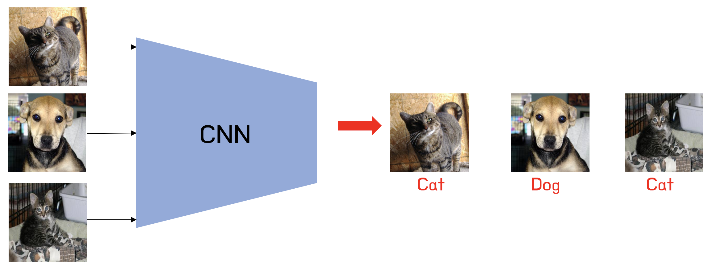
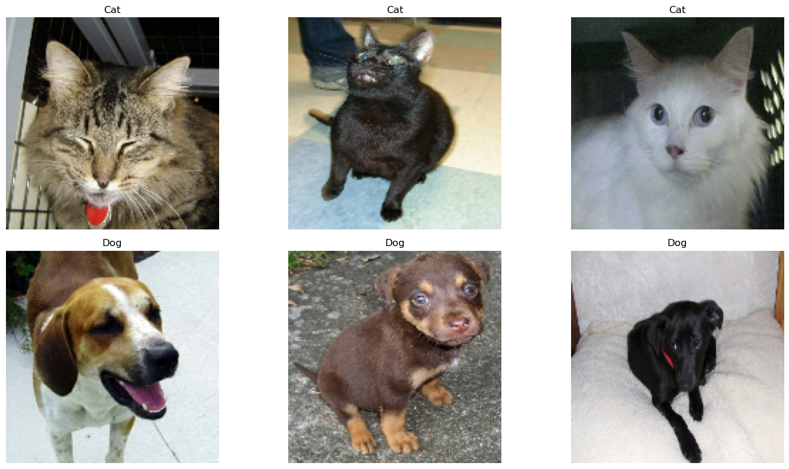
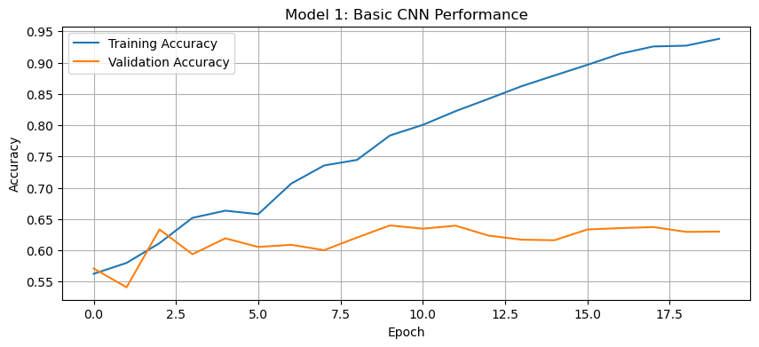
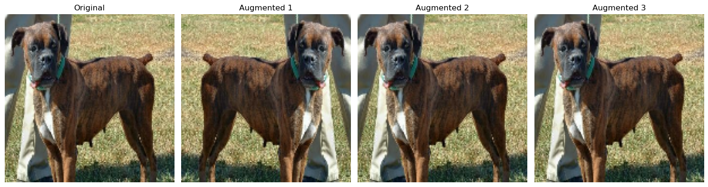
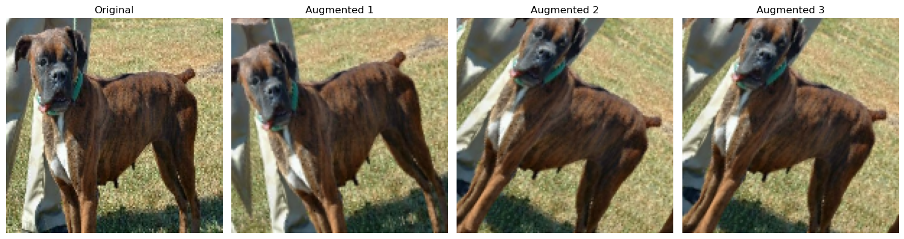
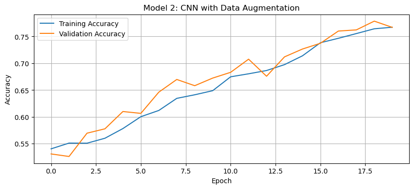
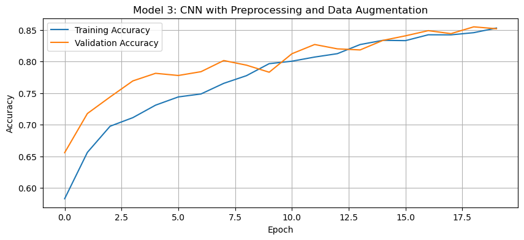
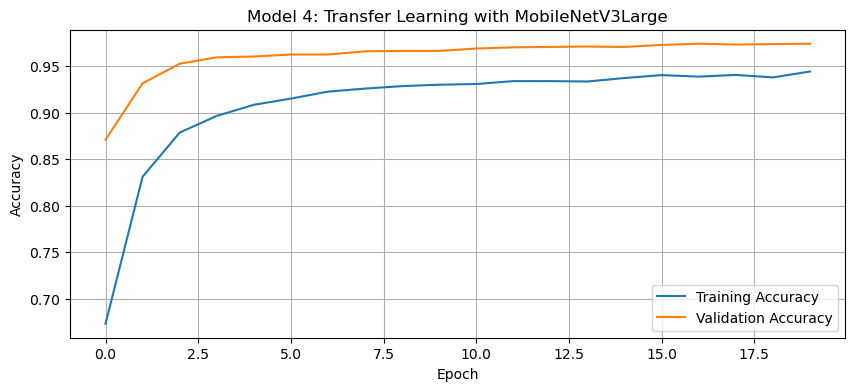

import os
import numpy as np
import matplotlib.pyplot as plt
import tensorflow as tf
from tensorflow import keras
from keras import utils
import tensorflow_datasets as tfds
Introduction
Image classification is a fundamental problem in deep learning, enabling medical diagnosis, self-driving cars, and automated image tagging applications. In this blog post, we’ll explore how to build Convolutional Neural Networks (CNNs) to distinguish between cats and dogs using Keras and the TensorFlow Datasets API. We’ll progressively enhance our models using data augmentation, preprocessing, and transfer learning. The goal is to build a model that achieves at least 93% validation accuracy using a pre-trained MobileNetV3 model.
Getting Started…
Importing Relevant Packages
We’ll start by importing the necessary packages for our CNN model and adjacent needs. Our imports include libraries such as Keras, TensorFlow, and TensorFlow Datasets (TFDS).
Obtaining & Preparing The Data
Now, we’ll access the data using a sample data set from Kaggle that contains labeled images of cats and dogs:
train_ds, validation_ds, test_ds = tfds.load(
"cats_vs_dogs",
# 40% for training, 10% for validation, and 10% for test (the rest unused)
split=["train[:40%]", "train[40%:50%]", "train[50%:60%]"],
as_supervised=True, # Include labels
)
print(f"Number of training samples: {train_ds.cardinality()}")
print(f"Number of validation samples: {validation_ds.cardinality()}")
print(f"Number of test samples: {test_ds.cardinality()}")Number of training samples: 9305
Number of validation samples: 2326
Number of test samples: 2326The cats_vs_dogs dataset is loaded and split into training (40%), validation (10%), and test (10%) sets.
The dataset contains images of different sizes, so we resize all images to (150, 150), as CNNs require a consistent input shape.
resize_fn = keras.layers.Resizing(150, 150)
train_ds = train_ds.map(lambda x, y: (resize_fn(x), y))
validation_ds = validation_ds.map(lambda x, y: (resize_fn(x), y))
test_ds = test_ds.map(lambda x, y: (resize_fn(x), y))To optimize performance, we batch and cache the dataset using prefetch(), ensuring efficient memory usage during training.
from tensorflow import data as tf_data
batch_size = 64
train_ds = train_ds.batch(batch_size).prefetch(tf_data.AUTOTUNE).cache()
validation_ds = validation_ds.batch(batch_size).prefetch(tf_data.AUTOTUNE).cache()
test_ds = test_ds.batch(batch_size).prefetch(tf_data.AUTOTUNE).cache()The batch_size determines how many data points are gathered from the directory at once.
Working With The Dataset
We’ll visualize random samples of cats and dogs to gain insight into our dataset. The dataset is unbatched and iterated over to separate images by label. We can get a piece of a data set using the take method; e.g. train_ds.take(1) will retrieve one batch (32 images with labels) from the training data.
The following function creates a two-row visualization where the first row shows three random pictures of cats and the second row shows three random pictures of dogs:
def visualize_data(dataset, num_images=3):
# Separate cats and dogs
cats, dogs = [], []
# Shuffle the dataset before selecting images
shuffled_ds = dataset.unbatch().shuffle(1000)
# Collect images for visualization
for image, label in shuffled_ds.take(30): # Sample from dataset
if label.numpy() == 0 and len(cats) < num_images:
cats.append(image.numpy())
elif label.numpy() == 1 and len(dogs) < num_images:
dogs.append(image.numpy())
# Create the plot
fig, axes = plt.subplots(2, num_images, figsize=(15, 8))
# Plot cats in first row
for i in range(num_images):
axes[0, i].imshow(cats[i].astype("uint8"))
axes[0, i].set_title("Cat")
axes[0, i].axis("off")
# Plot dogs in second row
for i in range(num_images):
axes[1, i].imshow(dogs[i].astype("uint8"))
axes[1, i].set_title("Dog")
axes[1, i].axis("off")
plt.tight_layout()
plt.show()
show_images(train_ds)2025-03-04 18:10:33.288487: W tensorflow/core/kernels/data/cache_dataset_ops.cc:914] The calling iterator did not fully read the dataset being cached. In order to avoid unexpected truncation of the dataset, the partially cached contents of the dataset will be discarded. This can happen if you have an input pipeline similar to `dataset.cache().take(k).repeat()`. You should use `dataset.take(k).cache().repeat()` instead.
Checking Label Frequencies
Next, we’ll compute label frequencies, determining how many images belong to each class (cats = 0, dogs = 1). This allows us to establish a baseline accuracy, which is the accuracy of always predicting the most frequent class. If the dataset is imbalanced, this affects model performance, making class balancing or augmentation necessary.
The following line of code will create an iterator called labels_iterator:
# Create an iterator for labels
labels_iterator = train_ds.unbatch().map(lambda image, label: label).as_numpy_iterator()We’ll next compute the number of images in the training data with label 0 (corresponding to "cat") and label 1 (corresponding to "dog"):
# Count occurrences of each label
label_counts = {0: 0, 1: 0} # 0 for cats, 1 for dogs
for label in labels_iterator:
label_counts[label] += 1
print(f"Number of cat images (label 0): {label_counts[0]}")
print(f"Number of dog images (label 1): {label_counts[1]}")Number of cat images (label 0): 4637
Number of dog images (label 1): 4668Finally, we’ll compute the baseline by taking the majority class and dividing it by the total images:
# Calculate baseline accuracy
total_images = label_counts[0] + label_counts[1]
majority_class = max(label_counts, key=label_counts.get)
baseline_accuracy = label_counts[majority_class] / total_images
print(f"Baseline accuracy (always guessing {majority_class}): {baseline_accuracy:.2%}")Baseline accuracy (always guessing 1): 50.17%The baseline model always predicts the most frequent class. If the dataset is balanced (approximately equal numbers of cats and dogs), the baseline accuracy would be around 50%. If there’s an imbalance, the baseline would be slightly higher. This serves as our benchmark, thus our models should perform significantly better to be considered useful.
First Model: CNN from Scratch
Our first approach involves training a CNN from scratch. The model consists of:
- Three convolutional layers (
Conv2D) with ReLU activation to extract features. - Max pooling layers (
MaxPooling2D) to reduce spatial dimensions. - A fully connected (
Dense) layer for classification. - A dropout layer to prevent overfitting.
We’ll build the model (model1) using keras.Sequential and the layers mentioned above:
# Create the first model
model1 = keras.Sequential([
# Input Layer: Defines the input shape for the model (150x150, 3 channel RGB)
keras.layers.Input(shape=(150, 150, 3)),
# First Convolutional Layer
keras.layers.Conv2D(32, (3, 3), activation='relu'), # 32 filters, 3x3 kernel, ReLU
keras.layers.MaxPooling2D((2, 2)), # Max pooling to reduce spatial dimensions
# Second Convolutional Layer
keras.layers.Conv2D(64, (3, 3), activation='relu'), # 64 filters, 3x3 kernel
keras.layers.MaxPooling2D((2, 2)), # Max pooling again to reduce dimensions
# Third Convolutional Layer
keras.layers.Conv2D(128, (3, 3), activation='relu'), # 128 filters, 3x3 kernel
keras.layers.MaxPooling2D((2, 2)), # Further downsampling
# Flatten layer converts 2D feature maps into a 1D feature vector
keras.layers.Flatten(),
# Fully Connected (Dense) Layer
keras.layers.Dense(128, activation='relu'), # 128 neurons, ReLU activation
# Dropout layer helps prevent overfitting by randomly dropping connections
keras.layers.Dropout(0.5), # 50% of neurons are dropped during training
# Output layer - 2 neurons (for cats and dogs)
keras.layers.Dense(2, activation='softmax') # Softmax for normalizing output
])We can inspect the model summary by running:
model1.summary()Model: "sequential"
┏━━━━━━━━━━━━━━━━━━━━━━━━━━━━━━━━━┳━━━━━━━━━━━━━━━━━━━━━━━━┳━━━━━━━━━━━━━━━┓ ┃ Layer (type) ┃ Output Shape ┃ Param # ┃ ┡━━━━━━━━━━━━━━━━━━━━━━━━━━━━━━━━━╇━━━━━━━━━━━━━━━━━━━━━━━━╇━━━━━━━━━━━━━━━┩ │ conv2d (Conv2D) │ (None, 148, 148, 32) │ 896 │ ├─────────────────────────────────┼────────────────────────┼───────────────┤ │ max_pooling2d (MaxPooling2D) │ (None, 74, 74, 32) │ 0 │ ├─────────────────────────────────┼────────────────────────┼───────────────┤ │ conv2d_1 (Conv2D) │ (None, 72, 72, 64) │ 18,496 │ ├─────────────────────────────────┼────────────────────────┼───────────────┤ │ max_pooling2d_1 (MaxPooling2D) │ (None, 36, 36, 64) │ 0 │ ├─────────────────────────────────┼────────────────────────┼───────────────┤ │ conv2d_2 (Conv2D) │ (None, 34, 34, 128) │ 73,856 │ ├─────────────────────────────────┼────────────────────────┼───────────────┤ │ max_pooling2d_2 (MaxPooling2D) │ (None, 17, 17, 128) │ 0 │ ├─────────────────────────────────┼────────────────────────┼───────────────┤ │ flatten (Flatten) │ (None, 36992) │ 0 │ ├─────────────────────────────────┼────────────────────────┼───────────────┤ │ dense (Dense) │ (None, 128) │ 4,735,104 │ ├─────────────────────────────────┼────────────────────────┼───────────────┤ │ dropout (Dropout) │ (None, 128) │ 0 │ ├─────────────────────────────────┼────────────────────────┼───────────────┤ │ dense_1 (Dense) │ (None, 2) │ 258 │ └─────────────────────────────────┴────────────────────────┴───────────────┘
Total params: 4,828,610 (18.42 MB)
Trainable params: 4,828,610 (18.42 MB)
Non-trainable params: 0 (0.00 B)
Now we’re ready to train the model. We’ll compile the model using the Adam optimizer and binary cross-entropy loss since this is a binary classification task. The model is trained for 20 epochs, and we plot the training vs. validation accuracy.
We’ll train the model on the Dataset by running:
# Compile the model
model1.compile(
optimizer='adam',
loss="sparse_categorical_crossentropy",
metrics=['accuracy']
)
# Train the model
history1 = model1.fit(
train_ds,
epochs=20,
validation_data=validation_ds
)Epoch 1/20
146/146 ━━━━━━━━━━━━━━━━━━━━ 15s 84ms/step - accuracy: 0.5454 - loss: 22.4823 - val_accuracy: 0.5709 - val_loss: 0.6765
Epoch 2/20
146/146 ━━━━━━━━━━━━━━━━━━━━ 13s 38ms/step - accuracy: 0.5722 - loss: 0.6805 - val_accuracy: 0.5408 - val_loss: 0.6803
Epoch 3/20
146/146 ━━━━━━━━━━━━━━━━━━━━ 6s 38ms/step - accuracy: 0.5812 - loss: 0.6627 - val_accuracy: 0.6333 - val_loss: 0.6401
Epoch 4/20
146/146 ━━━━━━━━━━━━━━━━━━━━ 6s 38ms/step - accuracy: 0.6502 - loss: 0.6238 - val_accuracy: 0.5937 - val_loss: 0.6889
Epoch 5/20
146/146 ━━━━━━━━━━━━━━━━━━━━ 6s 40ms/step - accuracy: 0.6642 - loss: 0.5986 - val_accuracy: 0.6191 - val_loss: 0.6914
Epoch 6/20
146/146 ━━━━━━━━━━━━━━━━━━━━ 10s 39ms/step - accuracy: 0.6528 - loss: 0.6232 - val_accuracy: 0.6053 - val_loss: 0.6762
Epoch 7/20
146/146 ━━━━━━━━━━━━━━━━━━━━ 6s 41ms/step - accuracy: 0.7014 - loss: 0.5594 - val_accuracy: 0.6088 - val_loss: 0.7254
Epoch 8/20
146/146 ━━━━━━━━━━━━━━━━━━━━ 6s 41ms/step - accuracy: 0.7206 - loss: 0.5276 - val_accuracy: 0.6002 - val_loss: 0.8139
Epoch 9/20
146/146 ━━━━━━━━━━━━━━━━━━━━ 6s 39ms/step - accuracy: 0.7408 - loss: 0.5093 - val_accuracy: 0.6204 - val_loss: 0.9211
Epoch 10/20
146/146 ━━━━━━━━━━━━━━━━━━━━ 6s 40ms/step - accuracy: 0.7735 - loss: 0.4678 - val_accuracy: 0.6397 - val_loss: 0.8101
Epoch 11/20
146/146 ━━━━━━━━━━━━━━━━━━━━ 10s 40ms/step - accuracy: 0.8102 - loss: 0.4050 - val_accuracy: 0.6346 - val_loss: 0.8699
Epoch 12/20
146/146 ━━━━━━━━━━━━━━━━━━━━ 6s 39ms/step - accuracy: 0.8221 - loss: 0.3841 - val_accuracy: 0.6393 - val_loss: 0.9269
Epoch 13/20
146/146 ━━━━━━━━━━━━━━━━━━━━ 6s 41ms/step - accuracy: 0.8454 - loss: 0.3530 - val_accuracy: 0.6234 - val_loss: 0.8182
Epoch 14/20
146/146 ━━━━━━━━━━━━━━━━━━━━ 10s 41ms/step - accuracy: 0.8617 - loss: 0.3357 - val_accuracy: 0.6169 - val_loss: 0.9354
Epoch 15/20
146/146 ━━━━━━━━━━━━━━━━━━━━ 6s 41ms/step - accuracy: 0.8848 - loss: 0.2723 - val_accuracy: 0.6161 - val_loss: 1.0123
Epoch 16/20
146/146 ━━━━━━━━━━━━━━━━━━━━ 10s 39ms/step - accuracy: 0.9029 - loss: 0.2464 - val_accuracy: 0.6333 - val_loss: 1.0399
Epoch 17/20
146/146 ━━━━━━━━━━━━━━━━━━━━ 10s 39ms/step - accuracy: 0.9149 - loss: 0.2233 - val_accuracy: 0.6354 - val_loss: 1.1485
Epoch 18/20
146/146 ━━━━━━━━━━━━━━━━━━━━ 6s 41ms/step - accuracy: 0.9270 - loss: 0.1924 - val_accuracy: 0.6371 - val_loss: 1.0909
Epoch 19/20
146/146 ━━━━━━━━━━━━━━━━━━━━ 6s 41ms/step - accuracy: 0.9309 - loss: 0.1785 - val_accuracy: 0.6294 - val_loss: 1.1745
Epoch 20/20
146/146 ━━━━━━━━━━━━━━━━━━━━ 10s 40ms/step - accuracy: 0.9467 - loss: 0.1564 - val_accuracy: 0.6298 - val_loss: 1.2176a
We’ll need to visualize the training data with matplotlib. The following function will plot the training vs validation accuracy over the number of epochs:
def history_plot(history, title):
plt.figure(figsize=(10, 4))
plt.plot(history.history['accuracy'], label='Training Accuracy')
plt.plot(history.history['val_accuracy'], label='Validation Accuracy')
plt.xlabel('Epoch')
plt.ylabel('Accuracy')
plt.title(title)
plt.legend()
plt.grid(True)
plt.show()We can now visualize the training vs validation accuracy for our first model:
# Plot the training history
history_plot(history1, 'Model 1: Basic CNN Performance')
Discussion of Model 1:
The accuracy of model one stabilized between 60% and 65% during training.
Through experimentation, it was found that using three convolutional layers instead of two improved validation accuracy. This is likely because additional convolutional layers allow the model to learn more complex spatial features and extract hierarchical patterns from the images. Additionally, adding a fully connected dense layer before the output layer helped improve accuracy by capturing high-level features learned from the convolutional layers and enhancing the model’s ability to classify images correctly.
This is a sizeable improvement from the baseline model, performing at least 15% better than random guessing. While seeing some results, there’s significant room for improvement.
Regarding overfitting, we can observe that the training accuracy is significantly higher than the validation accuracy, suggesting overfitting. The dropout layer helps mitigate this to some extent, but the model is still learning patterns that don’t generalize well to new data.
Second Model: Model with Data Augmentation
In our second model, we’ll add data augmentation to add some variability in the data during the training process. Data augmentation includes modified copies of the same image in the training set. For example, a picture of a cat is still a picture of a cat even if we flip it upside down or rotate it 90 degrees. We can include such transformed versions of the image in our training process to help our model learn the so-called invariant features of our input images.
We’ll use:
- Random horizontal flipping (
RandomFlip). - Random rotation (
RandomRotation).
We’ll then create a new model (model2), where the data augmentation layers are placed before the CNN layers. The model is trained again for 20 epochs, and the accuracy is plotted.
Let’s first create a visualization function for the augmentation so we can understand how the augmentation layer is transforming the images:
# Function to visualize augmentation effects
def visualize_augmentation(image, augmentation_layer, num_examples=3):
plt.figure(figsize=(15, 4))
# Display original image
plt.subplot(1, num_examples + 1, 1)
plt.imshow(image.astype("uint8"))
plt.title("Original")
plt.axis("off")
# Display a few augmented versions
for i in range(num_examples):
augmented = augmentation_layer(tf.expand_dims(image, 0))
plt.subplot(1, num_examples + 1, i + 2)
plt.imshow(tf.squeeze(augmented).numpy().astype("uint8"))
plt.title(f"Augmented {i+1}")
plt.axis("off")
plt.tight_layout()
plt.show()Running this will perform the augmentation and call the visualize_augmentation() function to visualize the transformations:
# Get a sample image
sample_image = None
for images, _ in train_ds.take(1):
sample_image = images[0].numpy()
# Create and visualize random flip augmentation
flip_layer = keras.layers.RandomFlip("horizontal")
visualize_augmentation(sample_image, flip_layer)
# Create and visualize random rotation augmentation
rotation_layer = keras.layers.RandomRotation(0.1) # 10% rotation range
visualize_augmentation(sample_image, rotation_layer)

Now that we understand what the augmentation layer is doing, let’s build our model2 with the augmentation layer above our convolutional layers:
# Define augmentation layer outside model to avoid errors
data_augmentation = keras.Sequential([
keras.layers.RandomFlip("horizontal"),
keras.layers.RandomRotation(0.1),
])
# Creates a model with data augmentation
model2 = keras.Sequential([
# Input Layer
keras.layers.Input(shape=(150, 150, 3)),
# Data Augmentation (Applied before CNN layers)
data_augmentation,
# Convolutional Layers (same as model1)
keras.layers.Conv2D(32, (3, 3), activation='relu'),
keras.layers.MaxPooling2D((2, 2)),
keras.layers.Conv2D(64, (3, 3), activation='relu'),
keras.layers.MaxPooling2D((2, 2)),
keras.layers.Conv2D(128, (3, 3), activation='relu'),
keras.layers.MaxPooling2D((2, 2)),
# Classification Layers
keras.layers.Flatten(),
keras.layers.Dense(128, activation='relu'),
keras.layers.Dropout(0.5),
# Output Layer
keras.layers.Dense(2, activation='softmax')
])We can inspect the model summary by running:
model2.summary()Model: "sequential_4"
┏━━━━━━━━━━━━━━━━━━━━━━━━━━━━━━━━━┳━━━━━━━━━━━━━━━━━━━━━━━━┳━━━━━━━━━━━━━━━┓ ┃ Layer (type) ┃ Output Shape ┃ Param # ┃ ┡━━━━━━━━━━━━━━━━━━━━━━━━━━━━━━━━━╇━━━━━━━━━━━━━━━━━━━━━━━━╇━━━━━━━━━━━━━━━┩ │ sequential_3 (Sequential) │ (None, 150, 150, 3) │ 0 │ ├─────────────────────────────────┼────────────────────────┼───────────────┤ │ conv2d_6 (Conv2D) │ (None, 148, 148, 32) │ 896 │ ├─────────────────────────────────┼────────────────────────┼───────────────┤ │ max_pooling2d_6 (MaxPooling2D) │ (None, 74, 74, 32) │ 0 │ ├─────────────────────────────────┼────────────────────────┼───────────────┤ │ conv2d_7 (Conv2D) │ (None, 72, 72, 64) │ 18,496 │ ├─────────────────────────────────┼────────────────────────┼───────────────┤ │ max_pooling2d_7 (MaxPooling2D) │ (None, 36, 36, 64) │ 0 │ ├─────────────────────────────────┼────────────────────────┼───────────────┤ │ conv2d_8 (Conv2D) │ (None, 34, 34, 128) │ 73,856 │ ├─────────────────────────────────┼────────────────────────┼───────────────┤ │ max_pooling2d_8 (MaxPooling2D) │ (None, 17, 17, 128) │ 0 │ ├─────────────────────────────────┼────────────────────────┼───────────────┤ │ flatten_2 (Flatten) │ (None, 36992) │ 0 │ ├─────────────────────────────────┼────────────────────────┼───────────────┤ │ dense_4 (Dense) │ (None, 128) │ 4,735,104 │ ├─────────────────────────────────┼────────────────────────┼───────────────┤ │ dropout_2 (Dropout) │ (None, 128) │ 0 │ ├─────────────────────────────────┼────────────────────────┼───────────────┤ │ dense_5 (Dense) │ (None, 2) │ 258 │ └─────────────────────────────────┴────────────────────────┴───────────────┘
Total params: 4,828,610 (18.42 MB)
Trainable params: 4,828,610 (18.42 MB)
Non-trainable params: 0 (0.00 B)
We’re ready to train model2 and should expect an accuracy higher than model1 with validation accuracy >60%:
# Compile the model
model2.compile(
optimizer='adam',
loss="sparse_categorical_crossentropy",
metrics=['accuracy']
)
# Train the model
history2 = model2.fit(
train_ds,
epochs=20,
validation_data=validation_ds
)Epoch 1/20
146/146 ━━━━━━━━━━━━━━━━━━━━ 8s 46ms/step - accuracy: 0.5288 - loss: 26.1849 - val_accuracy: 0.5310 - val_loss: 0.6883
Epoch 2/20
146/146 ━━━━━━━━━━━━━━━━━━━━ 6s 44ms/step - accuracy: 0.5370 - loss: 0.6912 - val_accuracy: 0.5262 - val_loss: 0.6878
Epoch 3/20
146/146 ━━━━━━━━━━━━━━━━━━━━ 7s 48ms/step - accuracy: 0.5346 - loss: 0.6887 - val_accuracy: 0.5696 - val_loss: 0.6737
Epoch 4/20
146/146 ━━━━━━━━━━━━━━━━━━━━ 6s 44ms/step - accuracy: 0.5464 - loss: 0.6838 - val_accuracy: 0.5778 - val_loss: 0.6710
Epoch 5/20
146/146 ━━━━━━━━━━━━━━━━━━━━ 10s 45ms/step - accuracy: 0.5735 - loss: 0.6753 - val_accuracy: 0.6101 - val_loss: 0.6592
Epoch 6/20
146/146 ━━━━━━━━━━━━━━━━━━━━ 7s 45ms/step - accuracy: 0.5937 - loss: 0.6628 - val_accuracy: 0.6066 - val_loss: 0.6607
Epoch 7/20
146/146 ━━━━━━━━━━━━━━━━━━━━ 10s 45ms/step - accuracy: 0.5960 - loss: 0.6614 - val_accuracy: 0.6462 - val_loss: 0.6308
Epoch 8/20
146/146 ━━━━━━━━━━━━━━━━━━━━ 6s 43ms/step - accuracy: 0.6311 - loss: 0.6440 - val_accuracy: 0.6698 - val_loss: 0.6193
Epoch 9/20
146/146 ━━━━━━━━━━━━━━━━━━━━ 6s 44ms/step - accuracy: 0.6422 - loss: 0.6365 - val_accuracy: 0.6582 - val_loss: 0.6262
Epoch 10/20
146/146 ━━━━━━━━━━━━━━━━━━━━ 10s 44ms/step - accuracy: 0.6358 - loss: 0.6383 - val_accuracy: 0.6724 - val_loss: 0.6090
Epoch 11/20
146/146 ━━━━━━━━━━━━━━━━━━━━ 10s 44ms/step - accuracy: 0.6678 - loss: 0.6161 - val_accuracy: 0.6831 - val_loss: 0.5882
Epoch 12/20
146/146 ━━━━━━━━━━━━━━━━━━━━ 6s 44ms/step - accuracy: 0.6732 - loss: 0.5992 - val_accuracy: 0.7077 - val_loss: 0.5582
Epoch 13/20
146/146 ━━━━━━━━━━━━━━━━━━━━ 6s 44ms/step - accuracy: 0.6849 - loss: 0.5906 - val_accuracy: 0.6758 - val_loss: 0.5839
Epoch 14/20
146/146 ━━━━━━━━━━━━━━━━━━━━ 6s 44ms/step - accuracy: 0.6887 - loss: 0.5934 - val_accuracy: 0.7120 - val_loss: 0.5631
Epoch 15/20
146/146 ━━━━━━━━━━━━━━━━━━━━ 10s 44ms/step - accuracy: 0.7143 - loss: 0.5631 - val_accuracy: 0.7266 - val_loss: 0.5406
Epoch 16/20
146/146 ━━━━━━━━━━━━━━━━━━━━ 10s 44ms/step - accuracy: 0.7324 - loss: 0.5391 - val_accuracy: 0.7373 - val_loss: 0.5249
Epoch 17/20
146/146 ━━━━━━━━━━━━━━━━━━━━ 10s 45ms/step - accuracy: 0.7430 - loss: 0.5221 - val_accuracy: 0.7601 - val_loss: 0.4919
Epoch 18/20
146/146 ━━━━━━━━━━━━━━━━━━━━ 10s 44ms/step - accuracy: 0.7584 - loss: 0.5030 - val_accuracy: 0.7623 - val_loss: 0.5070
Epoch 19/20
146/146 ━━━━━━━━━━━━━━━━━━━━ 10s 44ms/step - accuracy: 0.7579 - loss: 0.4986 - val_accuracy: 0.7786 - val_loss: 0.4747
Epoch 20/20
146/146 ━━━━━━━━━━━━━━━━━━━━ 10s 45ms/step - accuracy: 0.7687 - loss: 0.4849 - val_accuracy: 0.7670 - val_loss: 0.4911
Visualize the training vs validation accuracy for the second model:
# Plot the training history
history_plot(history2, 'Model 2: CNN with Data Augmentation')
Discussion of Model 2:
The accuracy of the second model stabilized between 75% and 80% during training.
Through experimentation, I found that using
RandomFlip("horizontal")instead of"horizontal_and_vertical"improved validation accuracy. This makes sense because flipping cat and dog images upside down likely introduced unrealistic variations that confused the model rather than helping it generalize. Similarly, settingRandomRotationto a low value (e.g.,0.1) led to better validation accuracy, as excessive rotation distorted important features, reducing the model’s ability to learn meaningful patterns.This represents an improvement over Model 1. The data augmentation techniques help the model learn more robust features by creating variations of the training images. This allows the model generalize new data better.
Regarding overfitting, there’s likely still some difference between the training and validation accuracies, but it should be less pronounced than in Model 1. Data augmentation is specifically designed to combat overfitting by introducing variability in the training data.
Third Model: Data Preprocessing/Normalization
Since pixel values range from [0, 255] (RGB values), we normalize them to [-1, 1] using the Rescaling layer. By handling the scaling before the training process, we can spend more of our training energy handling actual signals in the data and less energy having the weights adjusted to the data scale. This speeds up convergence and helps the model generalize better.
The normalization layer is added before data augmentation in a new model (model3):
# Create preprocessing layer
i = keras.Input(shape=(150, 150, 3))
# Scale pixel values from (0, 255) to (-1, 1)
scale_layer = keras.layers.Rescaling(scale=1 / 127.5, offset=-1)
x = scale_layer(i)
# Create a preprocessing model that applies scaling
preprocessor = keras.Model(inputs=i, outputs=x)
# Same augmentation layer as in model2
data_augmentation = keras.Sequential([
keras.layers.RandomFlip("horizontal"),
keras.layers.RandomRotation(0.1),
])
# Create a CNN model with preprocessing and augmentation
model3 = keras.Sequential([
# Preprocessing layer
preprocessor,
# Data Augmentation
data_augmentation,
# Convolutional layers (mostly same as model1)
# Added padding='same' to preserve spatial features and double the filters
keras.layers.Conv2D(64, (3, 3), activation='relu', padding='same'),
keras.layers.MaxPooling2D((2, 2)),
keras.layers.Conv2D(128, (3, 3), activation='relu', padding='same'),
keras.layers.MaxPooling2D((2, 2)),
keras.layers.Conv2D(256, (3, 3), activation='relu', padding='same'),
keras.layers.MaxPooling2D((2, 2)),
# Classification layers
keras.layers.Flatten(),
keras.layers.Dense(256, activation='relu'),
keras.layers.Dropout(0.5),
keras.layers.Dense(2, activation='softmax')
])We can inspect the model summary by running:
model3.summary()Model: "sequential_6"
┏━━━━━━━━━━━━━━━━━━━━━━━━━━━━━━━━━┳━━━━━━━━━━━━━━━━━━━━━━━━┳━━━━━━━━━━━━━━━┓ ┃ Layer (type) ┃ Output Shape ┃ Param # ┃ ┡━━━━━━━━━━━━━━━━━━━━━━━━━━━━━━━━━╇━━━━━━━━━━━━━━━━━━━━━━━━╇━━━━━━━━━━━━━━━┩ │ functional_5 (Functional) │ (None, 150, 150, 3) │ 0 │ ├─────────────────────────────────┼────────────────────────┼───────────────┤ │ sequential_5 (Sequential) │ (None, 150, 150, 3) │ 0 │ ├─────────────────────────────────┼────────────────────────┼───────────────┤ │ conv2d_9 (Conv2D) │ (None, 150, 150, 64) │ 1,792 │ ├─────────────────────────────────┼────────────────────────┼───────────────┤ │ max_pooling2d_9 (MaxPooling2D) │ (None, 75, 75, 64) │ 0 │ ├─────────────────────────────────┼────────────────────────┼───────────────┤ │ conv2d_10 (Conv2D) │ (None, 75, 75, 128) │ 73,856 │ ├─────────────────────────────────┼────────────────────────┼───────────────┤ │ max_pooling2d_10 (MaxPooling2D) │ (None, 37, 37, 128) │ 0 │ ├─────────────────────────────────┼────────────────────────┼───────────────┤ │ conv2d_11 (Conv2D) │ (None, 37, 37, 256) │ 295,168 │ ├─────────────────────────────────┼────────────────────────┼───────────────┤ │ max_pooling2d_11 (MaxPooling2D) │ (None, 18, 18, 256) │ 0 │ ├─────────────────────────────────┼────────────────────────┼───────────────┤ │ flatten_3 (Flatten) │ (None, 82944) │ 0 │ ├─────────────────────────────────┼────────────────────────┼───────────────┤ │ dense_6 (Dense) │ (None, 256) │ 21,233,920 │ ├─────────────────────────────────┼────────────────────────┼───────────────┤ │ dropout_3 (Dropout) │ (None, 256) │ 0 │ ├─────────────────────────────────┼────────────────────────┼───────────────┤ │ dense_7 (Dense) │ (None, 2) │ 514 │ └─────────────────────────────────┴────────────────────────┴───────────────┘
Total params: 21,605,250 (82.42 MB)
Trainable params: 21,605,250 (82.42 MB)
Non-trainable params: 0 (0.00 B)
We’re ready to train model3 and should expect an accuracy higher than model2 with validation accuracy >80%:
# Compile the model
model3.compile(
optimizer='adam',
loss='sparse_categorical_crossentropy',
metrics=['accuracy']
)
# Train the model
history3 = model3.fit(
train_ds,
epochs=20,
validation_data=validation_ds
)Epoch 1/20
146/146 ━━━━━━━━━━━━━━━━━━━━ 23s 130ms/step - accuracy: 0.5569 - loss: 1.0618 - val_accuracy: 0.6556 - val_loss: 0.6299
Epoch 2/20
146/146 ━━━━━━━━━━━━━━━━━━━━ 16s 111ms/step - accuracy: 0.6349 - loss: 0.6388 - val_accuracy: 0.7175 - val_loss: 0.5751
Epoch 3/20
146/146 ━━━━━━━━━━━━━━━━━━━━ 16s 108ms/step - accuracy: 0.6914 - loss: 0.5869 - val_accuracy: 0.7438 - val_loss: 0.5328
Epoch 4/20
146/146 ━━━━━━━━━━━━━━━━━━━━ 16s 108ms/step - accuracy: 0.6998 - loss: 0.5700 - val_accuracy: 0.7691 - val_loss: 0.5065
Epoch 5/20
146/146 ━━━━━━━━━━━━━━━━━━━━ 16s 108ms/step - accuracy: 0.7189 - loss: 0.5424 - val_accuracy: 0.7812 - val_loss: 0.4774
Epoch 6/20
146/146 ━━━━━━━━━━━━━━━━━━━━ 16s 108ms/step - accuracy: 0.7392 - loss: 0.5240 - val_accuracy: 0.7777 - val_loss: 0.4710
Epoch 7/20
146/146 ━━━━━━━━━━━━━━━━━━━━ 21s 110ms/step - accuracy: 0.7476 - loss: 0.5074 - val_accuracy: 0.7837 - val_loss: 0.4683
Epoch 8/20
146/146 ━━━━━━━━━━━━━━━━━━━━ 16s 111ms/step - accuracy: 0.7643 - loss: 0.4909 - val_accuracy: 0.8014 - val_loss: 0.4380
Epoch 9/20
146/146 ━━━━━━━━━━━━━━━━━━━━ 16s 109ms/step - accuracy: 0.7748 - loss: 0.4756 - val_accuracy: 0.7941 - val_loss: 0.4403
Epoch 10/20
146/146 ━━━━━━━━━━━━━━━━━━━━ 16s 109ms/step - accuracy: 0.7865 - loss: 0.4612 - val_accuracy: 0.7829 - val_loss: 0.4627
Epoch 11/20
146/146 ━━━━━━━━━━━━━━━━━━━━ 20s 108ms/step - accuracy: 0.7889 - loss: 0.4437 - val_accuracy: 0.8121 - val_loss: 0.4130
Epoch 12/20
146/146 ━━━━━━━━━━━━━━━━━━━━ 21s 110ms/step - accuracy: 0.7976 - loss: 0.4301 - val_accuracy: 0.8267 - val_loss: 0.4007
Epoch 13/20
146/146 ━━━━━━━━━━━━━━━━━━━━ 16s 110ms/step - accuracy: 0.8018 - loss: 0.4288 - val_accuracy: 0.8199 - val_loss: 0.4015
Epoch 14/20
146/146 ━━━━━━━━━━━━━━━━━━━━ 16s 111ms/step - accuracy: 0.8231 - loss: 0.4025 - val_accuracy: 0.8181 - val_loss: 0.4436
Epoch 15/20
146/146 ━━━━━━━━━━━━━━━━━━━━ 16s 109ms/step - accuracy: 0.8305 - loss: 0.3857 - val_accuracy: 0.8332 - val_loss: 0.3856
Epoch 16/20
146/146 ━━━━━━━━━━━━━━━━━━━━ 16s 109ms/step - accuracy: 0.8271 - loss: 0.3860 - val_accuracy: 0.8405 - val_loss: 0.3844
Epoch 17/20
146/146 ━━━━━━━━━━━━━━━━━━━━ 20s 109ms/step - accuracy: 0.8322 - loss: 0.3781 - val_accuracy: 0.8487 - val_loss: 0.3722
Epoch 18/20
146/146 ━━━━━━━━━━━━━━━━━━━━ 16s 109ms/step - accuracy: 0.8356 - loss: 0.3702 - val_accuracy: 0.8439 - val_loss: 0.3796
Epoch 19/20
146/146 ━━━━━━━━━━━━━━━━━━━━ 20s 109ms/step - accuracy: 0.8372 - loss: 0.3544 - val_accuracy: 0.8547 - val_loss: 0.3628
Epoch 20/20
146/146 ━━━━━━━━━━━━━━━━━━━━ 16s 109ms/step - accuracy: 0.8495 - loss: 0.3476 - val_accuracy: 0.8517 - val_loss: 0.3548
Visualize the training vs validation accuracy for the third model:
# Plot the training history
history_plot(history3, 'Model 3: CNN with Preprocessing and Data Augmentation')
Discussion of Model 3:
The validation accuracy of the third model reached approximately 80-85% during training.
Through experimentation, it was found that using
"same"padding instead of"valid"helped preserve spatial features throughout the convolutional layers, leading to improved validation accuracy. This is because"same"padding ensures that the output feature maps retain the same spatial dimensions, preventing loss of important edge information. Additionally, doubling the number of filters in each convolutional layer increased accuracy by allowing the model to learn more complex and diverse feature representations, enhancing its ability to distinguish between cats and dogs.This is a significant improvement over both Model 1 and Model 2. The preprocessing helps the model train more efficiently by normalizing the pixel values to the range [-1, 1]. This scaling makes the optimization process more stable and allows the model to learn more effectively.
Regarding overfitting, data augmentation and proper preprocessing reduced the gap between training and validation accuracy. Now, the model learns more generalizable features rather than memorizing the training data.
Fourth Model: Transfer Learning with MobileNetV3
Instead of training a CNN from scratch, we’ll leverage MobileNetV3Large, a pre-trained CNN trained on millions of images. In this model, we’ll freeze the base model’s weights and only train the final classification layers.
We’ll download MobileNetV3Large as base_model_layer, adding it in between the augmentation layer and the convolutional layers:
# Set up MobileNetV3Large as a base model
IMG_SHAPE = (150, 150, 3)
base_model = keras.applications.MobileNetV3Large(
input_shape=IMG_SHAPE,
include_top=False,
weights='imagenet'
)
base_model.trainable = False
i = keras.Input(shape=IMG_SHAPE)
x = base_model(i, training=False)
base_model_layer = keras.Model(inputs=i, outputs=x)
# Same augmentation layer as in model2
data_augmentation = keras.Sequential([
keras.layers.RandomFlip("horizontal"),
keras.layers.RandomRotation(0.1),
])
# Create a model using transfer learning
model4 = keras.Sequential([
keras.Input(shape=IMG_SHAPE), # Explicit input layer
# Data augmentation layers
data_augmentation,
# Pre-trained base model
base_model_layer,
# Classification layers
# Reduces each feature map to a single value by computing the average
keras.layers.GlobalAveragePooling2D(),
keras.layers.Dropout(0.3),
keras.layers.Dense(2, activation='softmax')
])We can inspect the model summary by running:
model4.summary()Model: "sequential_12"
┏━━━━━━━━━━━━━━━━━━━━━━━━━━━━━━━━━┳━━━━━━━━━━━━━━━━━━━━━━━━┳━━━━━━━━━━━━━━━┓ ┃ Layer (type) ┃ Output Shape ┃ Param # ┃ ┡━━━━━━━━━━━━━━━━━━━━━━━━━━━━━━━━━╇━━━━━━━━━━━━━━━━━━━━━━━━╇━━━━━━━━━━━━━━━┩ │ sequential_11 (Sequential) │ (None, 150, 150, 3) │ 0 │ ├─────────────────────────────────┼────────────────────────┼───────────────┤ │ functional_14 (Functional) │ (None, 5, 5, 960) │ 2,996,352 │ ├─────────────────────────────────┼────────────────────────┼───────────────┤ │ global_average_pooling2d_2 │ (None, 960) │ 0 │ │ (GlobalAveragePooling2D) │ │ │ ├─────────────────────────────────┼────────────────────────┼───────────────┤ │ dropout_6 (Dropout) │ (None, 960) │ 0 │ ├─────────────────────────────────┼────────────────────────┼───────────────┤ │ dense_10 (Dense) │ (None, 2) │ 1,922 │ └─────────────────────────────────┴────────────────────────┴───────────────┘
Total params: 2,998,274 (11.44 MB)
Trainable params: 1,922 (7.51 KB)
Non-trainable params: 2,996,352 (11.43 MB)
We’re ready to train model4 and should expect an accuracy higher than model3 with validation accuracy >93%:
# Compile the model
model4.compile(
optimizer=keras.optimizers.Adam(learning_rate=0.0001),
loss='sparse_categorical_crossentropy',
metrics=['accuracy']
)
# Train the model
history4 = model4.fit(
train_ds,
epochs=20,
validation_data=validation_ds
)Epoch 1/20
146/146 ━━━━━━━━━━━━━━━━━━━━ 17s 72ms/step - accuracy: 0.6088 - loss: 0.7998 - val_accuracy: 0.8710 - val_loss: 0.3336
Epoch 2/20
146/146 ━━━━━━━━━━━━━━━━━━━━ 8s 56ms/step - accuracy: 0.8164 - loss: 0.4177 - val_accuracy: 0.9316 - val_loss: 0.2011
Epoch 3/20
146/146 ━━━━━━━━━━━━━━━━━━━━ 9s 63ms/step - accuracy: 0.8709 - loss: 0.3027 - val_accuracy: 0.9527 - val_loss: 0.1528
Epoch 4/20
146/146 ━━━━━━━━━━━━━━━━━━━━ 8s 56ms/step - accuracy: 0.8982 - loss: 0.2482 - val_accuracy: 0.9596 - val_loss: 0.1279
Epoch 5/20
146/146 ━━━━━━━━━━━━━━━━━━━━ 8s 56ms/step - accuracy: 0.9032 - loss: 0.2350 - val_accuracy: 0.9604 - val_loss: 0.1139
Epoch 6/20
146/146 ━━━━━━━━━━━━━━━━━━━━ 8s 55ms/step - accuracy: 0.9165 - loss: 0.2006 - val_accuracy: 0.9626 - val_loss: 0.1049
Epoch 7/20
146/146 ━━━━━━━━━━━━━━━━━━━━ 8s 54ms/step - accuracy: 0.9232 - loss: 0.1981 - val_accuracy: 0.9626 - val_loss: 0.0998
Epoch 8/20
146/146 ━━━━━━━━━━━━━━━━━━━━ 8s 54ms/step - accuracy: 0.9286 - loss: 0.1818 - val_accuracy: 0.9660 - val_loss: 0.0932
Epoch 9/20
146/146 ━━━━━━━━━━━━━━━━━━━━ 8s 54ms/step - accuracy: 0.9291 - loss: 0.1787 - val_accuracy: 0.9665 - val_loss: 0.0904
Epoch 10/20
146/146 ━━━━━━━━━━━━━━━━━━━━ 8s 54ms/step - accuracy: 0.9289 - loss: 0.1705 - val_accuracy: 0.9665 - val_loss: 0.0875
Epoch 11/20
146/146 ━━━━━━━━━━━━━━━━━━━━ 8s 54ms/step - accuracy: 0.9312 - loss: 0.1674 - val_accuracy: 0.9690 - val_loss: 0.0845
Epoch 12/20
146/146 ━━━━━━━━━━━━━━━━━━━━ 10s 55ms/step - accuracy: 0.9336 - loss: 0.1618 - val_accuracy: 0.9703 - val_loss: 0.0833
Epoch 13/20
146/146 ━━━━━━━━━━━━━━━━━━━━ 9s 62ms/step - accuracy: 0.9332 - loss: 0.1612 - val_accuracy: 0.9708 - val_loss: 0.0816
Epoch 14/20
146/146 ━━━━━━━━━━━━━━━━━━━━ 8s 54ms/step - accuracy: 0.9332 - loss: 0.1673 - val_accuracy: 0.9712 - val_loss: 0.0799
Epoch 15/20
146/146 ━━━━━━━━━━━━━━━━━━━━ 8s 55ms/step - accuracy: 0.9383 - loss: 0.1548 - val_accuracy: 0.9708 - val_loss: 0.0788
Epoch 16/20
146/146 ━━━━━━━━━━━━━━━━━━━━ 8s 55ms/step - accuracy: 0.9353 - loss: 0.1573 - val_accuracy: 0.9729 - val_loss: 0.0784
Epoch 17/20
146/146 ━━━━━━━━━━━━━━━━━━━━ 8s 54ms/step - accuracy: 0.9406 - loss: 0.1486 - val_accuracy: 0.9742 - val_loss: 0.0780
Epoch 18/20
146/146 ━━━━━━━━━━━━━━━━━━━━ 8s 55ms/step - accuracy: 0.9421 - loss: 0.1425 - val_accuracy: 0.9733 - val_loss: 0.0775
Epoch 19/20
146/146 ━━━━━━━━━━━━━━━━━━━━ 10s 55ms/step - accuracy: 0.9389 - loss: 0.1458 - val_accuracy: 0.9738 - val_loss: 0.0748
Epoch 20/20
146/146 ━━━━━━━━━━━━━━━━━━━━ 8s 54ms/step - accuracy: 0.9457 - loss: 0.1372 - val_accuracy: 0.9742 - val_loss: 0.0728
Visualize the training vs validation accuracy for the fourth model:
# Plot the training history
history_plot(history4, 'Model 4: Transfer Learning with MobileNetV3Large')
Discussion of Model 4:
The validation accuracy of the fourth model reached over 95% during training.
This is a dramatic improvement over all previous models. The pre-trained
MobileNetV3Largehas already learned robust feature representations from millions of images in the ImageNet dataset. By leveraging these pre-learned features, we can achieve much higher accuracy with very little additional training.Regarding the model summary, we can observe that the base model contains the vast majority of the parameters, but since these are frozen (not trainable), we’re only training the final classification layers. This makes the training process very efficient.
Unlike earlier models, the transfer learning approach generally reduces overfitting since the base model already captures generalizable features. The gap between training and validation accuracy is much smaller than in previous models, suggesting that the model generalizes well to new data.
To further optimize the training process, we set the optimizer to
Adamwith a learning rate of0.0001. Since we are fine-tuning a pre-trained model, a high learning rate (e.g., 0.001) could overwrite important pre-trained features, leading to suboptimal performance. A lower learning rate (0.0001) ensures the model makes gradual updates, preserving the useful feature representations learned by MobileNetV3, achieving smoother convergence with higher validation accuracy.
Score On Test Data
Finally, we’ll evaluate the accuracy of our most performant model (model4) on the unseen test_ds. We should expect an accuracy close to the validation accuracy we reached in the fourth model ~96-97%:
# Evaluate on test data
test_loss, test_acc = model4.evaluate(test_ds)
print(f"Test accuracy: {test_acc:.4f}")37/37 ━━━━━━━━━━━━━━━━━━━━ 4s 94ms/step - accuracy: 0.9713 - loss: 0.0702
Test accuracy: 0.9673
Our test accuracy falls within the expected range (96.73%), confirming that our most performant model (model4) was properly trained and generalizes well to unseen data. This suggests that the transfer learning approach successfully leveraged pre-trained features, allowing the model to maintain high accuracy on new inputs without overfitting.